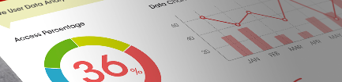

데이터 분석/해석

축적된 데이터를 활용하려면 어떻게 분석/해석할지가중요합니다. TimeSwitch에서는 표준적인 분석 방법과 활용 목적에 따른 해석을 제공합니다.
기본적인 평균입니다. 대상 데이터들의 대표적인 수치를 확인할 수 있습니다. 다만 평균만으로는 데이터 쏠림 등의 문제를 확인할 수 없습니다. 분산 확인 통계적인 방법을 사용해서 축적된 데이터의 분산을
확인합니다. 분산을 사용하면 평균값으로는 보이지 않는 문제와 특징을 찾아낼 수 있습니다.
여러 개의 데이터를 조합하고 분석/해석해서 상관관계와 인과 관계가 있다고 생각되는 데이터를 추출합니다. 통계적인 방법을 사용해서 축적된 데이터의 분산을 확인합니다. 분산을 사용하면 평균값으로는 보이지
않는
문제와 특징을 찾아낼 수 있습니다.
기본적인 평균입니다. 대상 데이터들의 대표적인 수치를 확인할 수 있습니다. 여러 개의 데이터를 조합하고 분석/해석해서 상관관계와 인과 관계가 있다고 생각되는 데이터를 추출합니다.